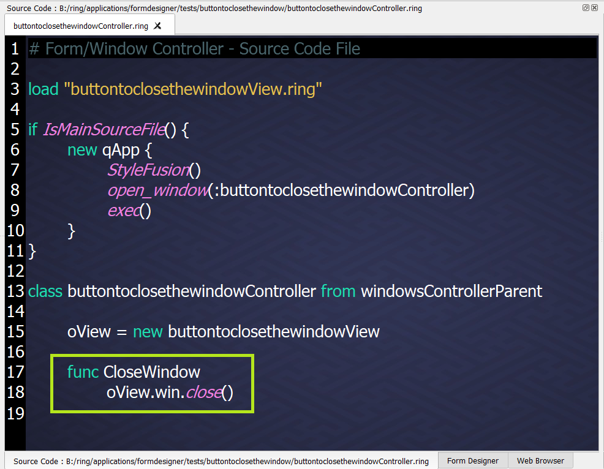
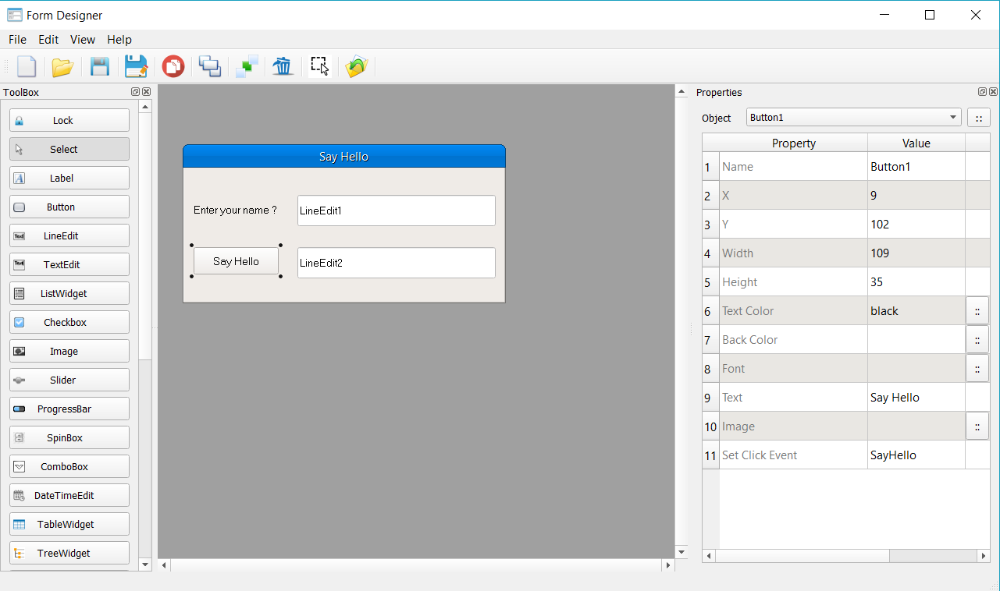
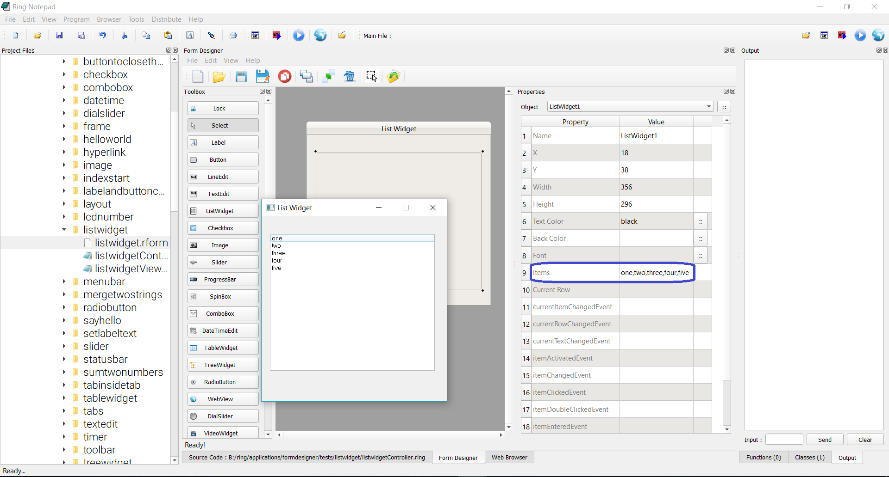

Using the Form Designer¶
In this chapter we will learn about using the Form Designer.
We can run the From Designer from Ring Notepad
From the Menubar in Ring Notepad - View Menu - We can Show/Hide the Form Designer window.
Also we can run the Form Designer in another window.
From the Ring Notepad - Tools Menu - Select the Form Designer.
The Designer Windows¶
- Toolbox : To select controls to be added to the window.
- Properties : To set the properties of the active window or controls.
- Design Region : To select, move and resize the window and the controls.
The Toolbox¶
We have many buttons.
- Lock : We can use it to draw many controls of the same type quickly.
- Select : We can use it to select a control in the Design Region
- Controls Buttons : Select a control to be added to the window.
The Properties¶
- When we select the window or one control, We will have the selected object properties.
- Also In the properties window we have a combobox to select the active control.
- Some properties provide a button next to the property value. We can click on the button to get more options.
- When we select more than one control, We will have options for multi-selection
Running Forms¶
When we save the form file (*.rform), The Form Designer will create two Ring files
- The Controller Class
- The View Class
For example, if the form file is helloworld.rform
The form designer will generate two files
- helloworldcontroller.ring
- helloworldview.ring
To run the program, Open the controller class file then click the Run button (CTRL+F5)
Tip
When you open a form using Ring Notepad, the controller class will be opened automatically, So we can press (CTRL+F5) or click on the Run button while the form designer window is active.
Events Code¶
- Just type the method name in the event property.
(2) Then write the method code in the controller class.
In this example we write
func CloseWindow
oView.win.close()
Where inside the controller class, We uses the oView object to access the form.
Another Example :
The Event Code
func SayHello
oView {
LineEdit2.setText("Hello "+ LineEdit1.text() )
}
Keyboard Shortcuts¶
After selecting one or group of controls
- Use the Arrows (Up, Down, Left and Right) to move them around.
- Shift + the Arrows (Up, Down, Left and Right) to Resize the controls.
- Del button to delete the controls.
- CTRL+SHIFT+V to Duplicate the controls.

Window Flags¶
From the Window properties we can open the Window Flags window.
Entering Items¶
For some controls like the List Widget we can enter items separated by comma ‘,’
Using Layouts¶
- To use layouts, At first add the layout control to the window.
- Use the window “Set Layout” property to determine the main layout.
- From the layout properties determine the controls and the layout type.
More Samples and Tests¶
Check the folder : ring/applications/formdesigner/tests
Online : https://github.com/ring-lang/ring/tree/master/applications/formdesigner/tests